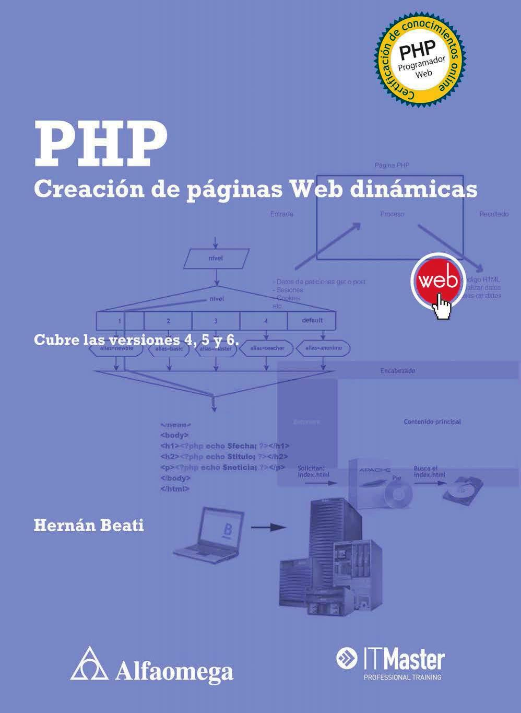

LECTURAS SOBRE PHP

PHP es uno de los lenguajes para la web más populares y permite, entre otras funciones, manejar archivos y fechas, y conectarnos a bases de datos. PHP le da vida a tus páginas web dándoles dinamismo y funcionalidad para que el programador pueda trabajar de manera más cercana con los diseñadores y sea capaz de entregar un producto con más vida. Desde su nacimiento la filosofía de PHP ha sido mantenerse simple y esa simpleza obliga a crear una estructura que permita crecer las aplicaciones web. Adéntrate en este fascinante mundo de PHP y descubre hasta dónde puede llegar este lenguaje de programación.
Link de Descarga: http://www.freelibros.org/diseno-web/video2brain-primeros-pasos-con-php-2015.html

En 1994 un programador nacido en Groenlandia, llamado Rasmus Lerdorf (http://lerdorf.com), desarrolló un código que le ayudaría a crear su página Web personal de manera más sencilla. Lo llamó Personal Home Page Tools (PHP Tools) o herramientas para páginas Iniciales personales. De las primeras tres palabras en inglés surge el nombre del lenguaje que finalmente se liberó al público, gratis, en 1995.
Quince años después, el mundo de la Web ha cambiado drásticamente. La evolución y difusión de PHP en el mundo del desarrollo Web ha ¡do mucho más allá de lo que Rasmus pudo imaginar; se trata de un mundo del que ahora podrás ser parte.
Dos años más tarde, junto a otras personas, se reescribe parte del código del lenguaje y se lanza la versión de PHP que ha llevado el lenguaje al estrellato: PHP 3. Un lenguaje simple, rápido y dinámico que permite crear páginas Web interactivas con muy poco código.
En ese momento deciden que el nombre Personal Home Page ya le quedaba un poco corto al lenguaje y deciden cambiar el significado de las siglas. Así es que hoy PHP significa “PHP Hypertext Preprocessor”. No es un error de imprenta: la “pe” de PHP significa PHP. Es una sigla recursiva (un truco de programadores) y el resto del nombre significa “pre-procesador de hipertexto”. Es un pre-procesador porque se ejecuta antes que el navegador y trabaja principalmente sobre hipertexto, que es el concepto subyacente de los documentos HTML.
Con los años igualmente se ha ganado su propio nombre. PHP es, simplemente, PHP. Es tan importante en la Web como lo es HTML. Es un lenguaje fácil de aprender, simple de usar, potente, rápido, gratuito, de código abierto y utilizado en más de la mitad de todos los sitios Web del mundo. Sólo para ejemplificar la potencia del lenguaje, mencionaremos que el sitio más importante y con más visitas hoy en el mundo, Facebook, está desarrollado con PHP.
Link de Descarga: http://www.freelibros.org/diseno-web/php-creacion-de-paginas-web-dinamicas-hernan-beati.html
Aprende a mantener seguros tus proyectos creados en PHP.
La seguridad en PHP no debe tomarse a la ligera ni puede realizarse en una sola acción, ya que es una disciplina que debemos alimentar constantemente, investigando, actualizando, probando potenciales agujeros de seguridad, corrigiéndolos y ante todo, encontrando el equilibrio entre la importancia de la integridad de los datos y la usabilidad de nuestra aplicación. En este curso veremos algunas posibles brechas de seguridad, y las herramientas y metodologías necesarias para evitar que se haga mal uso de nuestras aplicaciones.
Link de Descarga: http://www.freelibros.org/videotutoriales/video2brain-seguridad-en-php.html